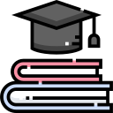
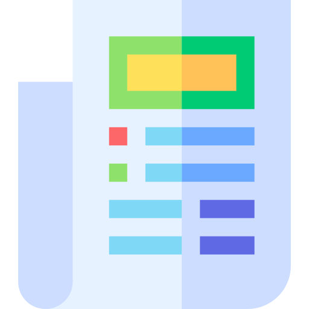

About
I'm Kamyab üëãüèª
Current I’m third year student of CE at Shahid Beheshti University, Tehran, Iran and interested in Back‑end programming, IT security, ML and other geek stuff. 2 years experience specializing in the Android development,
plus 1 years experience using Adobe XD. Super nerd who loves Linux and enjoys to customize all of the development environment.
Interested in devising a better problem‑solving method for challenging tasks, and learning new technologies and tools if the need arises. I’m passionate about my work. Because I love what I do, I have a steady source of motivation that drives me to do my best.
For my Bachelor's project, I worked with the following technologies:
C/C++
Java
Python
Javascript
Skills
- Visual Analytics
- Web-based integration of data mining and interactive visualization
- Machine Learning
- Machine learning, deep learning theoretical concepts
- Experience with different data types such as text and audio
- Python
- Web Programming
- Java Spring, Spring Boot and Thymeleaf
- PHP and Laravel framework
- Java socket programming
- Vue.js and Flask
- HTML, CSS, Javascript and D3
- Latex
- Information Retrieval
- Java Apache Lucene
- Elasticsearch and Kibana
- Version-control
- Git
- RDBMS
- MS-SQL server, MySQL and H2
- NoSQL
- Redis, MongoDB and Neo4j
- Matlab
Resume
Experience
Teaching Assistantship
Jan. 2021 – PRESENT
Shahid Beheshti University, Tehran, Iran
Technical Writing and Presentation Course
• Held TA sessions.
• Determined and graded homework, computer assignments.
• Under the supervision of Dr. Neshati.
Teaching Assistantship
Sep. 2020 – Jan. 2021
Shahid Beheshti University, Tehran, Iran
• Held TA sessions.
• Determined and graded homework, computer assignments and final projects.
• Under the supervision of Dr. Abdoos.
Teacher
Sep. 2020 – Jan. 2021
Jahad Daneshgahi Institute, Tehran, Iran
• Teaching Fundamental of programing.
• Determined and graded homework, computer assignments and final projects.
• Course syllabus includes:
C/C++
ICDL
Photoshop
Android Developer
Sept. 2019 – PRESENT
Freelance, Tehran, Iran
• I was asked to update an existing Android app to the latest version of Android and to fix any issues caused by this as well as a few other existingissues.
Java
Kotlin
MySQL
Education
B.Sc. in Computer Science and Engineering
Sep. 2018 - PRESENT
Shahid Beheshti University, Tehran, Iran
• During my degree at Shahid Beheshti University I learnt lots of key skills such as team work and project management. Although we mainly focused on software development and the principles of programming I use a lot of these skills to my advantage in my day to day work.
• Received full scholarship from Shahid Beheshti University. (tuition waiver)
• One of Iran’s 4 top universities.
• Supervisor: Prof. Hamid Reza Mahdiani
• Cumulative GPA: 3/4
Ranked within the top 1%, among 144,437 participants in the annual Iranian University Entrance Exam for Bachelor’s degree.
High School Diploma in Math and Physics
Sep. 2014 – Sep. 2018
Shahid Beheshti High School, Tehran, Iran
• Received full scholarship from Shahid Beheshti University. (tuition waiver)
• Cumulative GPA: 3.85/4
Ranked within the top 10 GPAs, among the 512 Students of the Math and Physics program at Shahid Beheshti High School.
Publications & Presentation
K.Abedi, E. Sajadi, K. Jalilian “The Matson Evaluation of Social Skills”, Social Network Analysis and Mining, 2021
K. Abedi, M. Jamali, E. Sajadi, “Human‑Centered Design”, A brief introduction to the topics and goals of this Interaction Design Specialization, 2020
Projects
Here I've listed the projects I've done in the last three years. There's more to find on my Github page!
- All
- Machine Learning
- NLP
- Visual Analytics
- Interactive Visualization
- Web Service
SeRViz: an Interactive Visualization Framework for the Analysis of Sequential Rules and Frequent Itemsets
* Masters thesis
Exploratory research on log of ground handling operations at Halifax Stanfield International Airport collected by Assaia Apron AI
Objective: Finding delay-related patterns affecting turnaround performance.
Methodology: Using data mining and visualization of patterns with a novel matrix-based approach
Evaluation: 1) Domain expert feedback on visual prototype 2) User test for measuring workload with NASA-TLX tool for a set of analytical tasks with both plain-text and SeRVis prototype. The NASA-TLX results for the two set of tasks are compared with paired t-test.
Results: SeRVis is a novel visual analytics tool for mining and exploring frequent patterns. Based on our experiments it reduces the cognitive load of users for the said tasks compared to the popular off-the-shelf data mining tool, SPMF.
Python
SPMF
Flask
Javascript
Vue.js
D3
Exploratory Data Analysis and Quantile Regression with LightGBM and Pytorch
Having learnt about quantile regression, I decided to try it myself and it resulted in
this Kaggle kernel. I did a series of exploratory data analysis steps to understand the data better, then I tried two tree-based
and neural network models for quantile regression. I also performed linear regression assumption check to see if it makes sense to use
quantile regression on this data after all. More detail is explained in the kernel.
Python
Pytorch
scikit-learn
LightGBM
Plotly
Acoustic Scene Classification
* Teamed with two other MSC students.
This project was done as the final project of Deep Learning course, summer 2020.
We built a CNN model to classify audio samples into different acoustic scenes (indoor, outdoor, transportation).
We used data augmentation to generate more training samples and prevent the network from overfitting. Furthermore, we used Grad-CAM, a visual
explanation technique, to analyze which parts of the spectrograms are most influential in CNN's final decision.
We managed to outperform the DCASE 2020 Task 1 Subtask B baseline accuracy by 5.98%.
Python
Pytorch
Plotly
Extractive Text Summarization and Keyword Extraction
This project was done as the final project of Advanced Topics in NLP course, winter-spring 2020.
In this project, we aim to improve off-the-shelf products for text summarization and keyword extraction. These products use statistical
techniques such as Bag-of-Words, which fail when it comes to semantical relationships between words. We tried to see if we can address this
problem with word vectors. The experimental results show that there is a trade-off between the performance improvement of state-of-the-art
methods and the efficiency of the baselines.
Python
Gensim
Reuters Corpus text classification with Keras
This project was done as the final project of Machine Learning for Big Data course, fall 2019. The goal is to train a model to
classify news articles into topics. I used deep autoencoders for feature extraction and deep neural network for classification. I
tried both TF-IDF and Glove word embeddings for text representation to find out which one performed best with this dataset.
In the Reuters Corpus, each article has multiple topics, which was a chance for me to explore both multi-class
(just take one topic per document) and multi-label (multiple topics per document) classifications as well.
Python
Tensorflow
Keras
scikit-learn
Airbnb Recommender System
* Teamed with three other MSC students.
This project was done as the final project of Visual Analytics course, fall 2019.
It aims to construct a recommender system for Airbnb listings. This project consists of
two significant parts, machine learning, and visualization.On the machine learning side, core implementation is a K-means clustering
algorithm to cluster listings. On the other part, some of the key features are maps, listing details, and some analysis to ease the choice
among the options. Using the recommender system, the search space for the users will be
narrowed down to a select set of options to choose from among them.
Python
scikit-learn
Flask
Javascripts
D3
HTML
CSS
* Please be patient with the demo as it takes a while for the project to fully load.
Interactive RadVis and Star Coordinates with D3
RadVis and Star Coordinates are used for visualization of multivariate datasets in a 2D projection. This interactive implementation
allows the user to select dataset of choice, change colours, move the anchors/axes and more.
Javascript
D3
HTML
CSS
Telegram Bot-Creator Bot
Bachelor's thesis project, Jan. 2018, Shahid Beheshti University.
Telegram is one of the most popular messaging apps in the world, and bots are one of its popular features.
The goal of this project was to create a platform where ordinary people with no knowledge of programming can create and customize their bot.
PHP
Laravel
MySQL
Contact
Email:
kamyababedi@gmail.com
ka.abedi@mail.sbu.ac.ir
A fun wrap up!
Thank you for scrolling down this far!